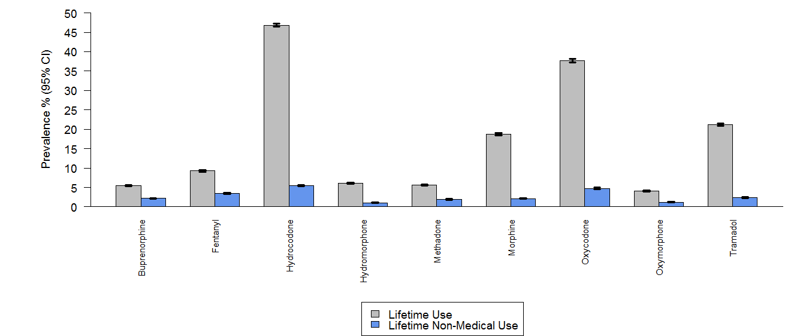
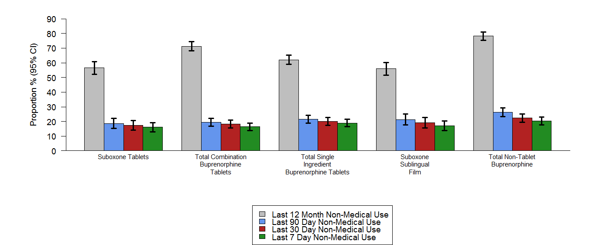

6 Data Visualization
6.1 Why ggplot2
The transferrable skills from ggplot2 are not the idiosyncracies of plotting syntax, but a powerful way of thinking about visualisation, as a way of mapping between variables and the visual properties of geometric objects that you can perceive.
— Hadley Wickham
Base plotting is imperative,it’s about what you do. You set up your layout(), then you go to the first group (drug) You add the points for that group (drug) along with a title. Then you fit and plot a best-fit-line for the first grouping, then the second grouping, and so on. Then you go on to the next plot. After 20 of those, you end with a legend.
ggplot2 plotting is declarative, it’s about what your graph is. The graph has drug group mapped to the x-axis, prevalence rate mapped to the y, and abuse type mapped to the color. The graph displays both points and best-fit lines for each drug group and it is faceted into one-plot-per-drug group, with a drug group described by its market name.
- Functional data visualization
- Wrangle your data
- Map data elements to visual elements
- Tweak scales, guides, axis, labels, theme
- Easy to reason about how the data drives the visualization
- Easy to iterate
- East to be consistent
ggplot2 is a huge package: philosophy + functions …but it is very well organized
ggplot2 has it’s one website with some very good examples and how to do common task.
See http://ggplot2.tidyverse.org/reference
6.2 Example
Going to throw a lot at you …but you’ll know where and what to look for. For just about every plotting task there are multiple ways to achieve the desired result.

What is similar / different between these plots? What is and what isn’t driven by data?
We’ll build this style of plot in stages. In chapter 9 of R for Data Science we will go into detail about how to get our data in this format.
6.2.1 Data
All plots start with data. `ggplot expects the data to be in a “Tidy Data” format. We’ll dive deeper into “tidy data” in Chapter 9 of R for Data Science, but for now the basic principle is
- Each variable forms a column
- Each observation forms a row
- Each observational unit forms a table
library(tidyverse)
#> -- Attaching packages ------------------------------------------------------- tidyverse 1.2.1 --
#> v ggplot2 2.2.1 v purrr 0.2.4
#> v tibble 1.4.2 v dplyr 0.7.4
#> v tidyr 0.8.0 v stringr 1.3.0
#> v readr 1.1.1 v forcats 0.3.0
#> -- Conflicts ---------------------------------------------------------- tidyverse_conflicts() --
#> x dplyr::filter() masks stats::filter()
#> x dplyr::lag() masks stats::lag()
dat <- readRDS("./data/bargraphdat.RDS")
dat
#> # A tibble: 18 x 5
#> drug use_type mean lower upper
#> <chr> <chr> <dbl> <dbl> <dbl>
#> 1 Buprenorphine use 5.45 5.26 5.64
#> 2 Fentanyl use 9.26 9.02 9.51
#> 3 Hydrocodone use 46.8 46.4 47.2
#> 4 Hydromorphone use 6.08 5.89 6.28
#> 5 Methadone use 5.59 5.39 5.79
#> 6 Morphine use 18.7 18.4 19.0
#> # ... with 12 more rowsp <- ggplot(data = dat)
p
That’s uninteresting. We haven’t mapped the data to our plot yet. Let’s work on getting the bar chart roughly right.
6.2.2 Aesthetics
Aesthetics map data to visual elements or parameters.
drug-> x-axismean-> y-axisuse_type-> color
p <- ggplot(data = dat, aes(x = drug, y = mean, color = use_type))
p
6.2.3 Geoms
Geoms are short for geometric objects which are displayed on the plot. Some of the more familiar ones are
| Type | Function |
|---|---|
| Point | geom_point() |
| Line | geom_line() |
| Bar | geom_bar(), geom_col() |
| Histogram | geom_histogram() |
| Regression | geom_smooth() |
| Boxplot | geom_boxplot() |
| Text | geom_text() |
| Vert./Horiz. Line | geom_{vh}line() |
| Count | geom_count() |
| Density | geom_density() |
Those are just the top 10 most popular geoms
See http://ggplot2.tidyverse.org/reference/ for many more options
Or just start typing geom_ in RStudio
#> [1] "geom_abline" "geom_area" "geom_bar" "geom_bin2d"
#> [5] "geom_blank" "geom_boxplot" "geom_col" "geom_contour"
#> [9] "geom_count" "geom_crossbar" "geom_curve" "geom_density"
#> [13] "geom_density_2d" "geom_density2d" "geom_dotplot" "geom_errorbar"
#> [17] "geom_errorbarh" "geom_freqpoly" "geom_hex" "geom_histogram"
#> [21] "geom_hline" "geom_jitter" "geom_label" "geom_line"
#> [25] "geom_linerange" "geom_map" "geom_path" "geom_point"
#> [29] "geom_pointrange" "geom_polygon" "geom_qq" "geom_quantile"
#> [33] "geom_raster" "geom_rect" "geom_ribbon" "geom_rug"
#> [37] "geom_segment" "geom_smooth" "geom_spoke" "geom_step"
#> [41] "geom_text" "geom_tile" "geom_violin" "geom_vline"There are also many ggplot extensions that add other useful geoms. See https://www.ggplot2-exts.org/ for many useful features and extensions.
There are two types of bar charts: geom_bar makes the height of the bar proportional to the number of cases in each group (or if the weight aesthetic is supplied, the sum of the weights). If you want the heights of the bars to represent values in the data, use geom_col instead. geom_bar will calculate the counts or proportions from the raw data. There is no reason to precompute those.
p <- ggplot(data = dat, aes(x = drug, y = mean, color = use_type)) +
geom_col()
p
Oops….
The color only controls the border of our bar chart, what we want to do is fill the bar. Also, note that by default the bars are stacked. We can fix that by having the position of each subgroup dodge each other.
p <- ggplot(data = dat, aes(x = drug, y = mean, fill = use_type)) +
geom_col(position = "dodge")
p
geom_*(mapping, data, stat, position)
dataGeoms can have their own data- Has to map onto global coordinates
mapGeoms can have their own aesthetics- Inherits global aesthetics
- Have geom-specific aesthetics
geom_pointneedsxandy, optionalshape,color,size, etc.geom_ribbonrequiresx,yminandymax, optionalfill
?geom_ribbon
statSome geoms apply further transformations to the data- All respect
stat = 'identity' - Ex:
geom_histogramusesstat_bin()to group observations
- All respect
positionSome adjust location of objects'dodge','stack','jitter'
Now lets add the error bars to our plot. We will have to add the upper and lower bounds to our aesthetics, and align them with our bars.
p <- ggplot(data = dat, aes(x = drug, y = mean, fill = use_type, ymin = lower, ymax = upper)) +
geom_col(position = "dodge", width = 0.75) +
geom_errorbar(position = position_dodge(width = 0.75), width = 0.5)
p
We’ve come pretty close to recreating the original plot. We still have some tweaking to do.
- Reorder the grouping so that “Use” comes before “Non-Medical Use” and use the full description.
- Change the fill colors
- Change the y-axis label to “Prevalence % (95% CI)”
- Remove the x-axis label “drug”.
- Change the y-axis scales to go in increments of 5
- Rotate the x-axis labels
- Remove the variable name over the legend.
- Move the legend to the bottom
The first one is handled with our data. Factors to the rescue. while the second can be done with a named vector.
# convert the use_type to a factor with the correct label
dat$use_type <-factor(dat$use_type,
levels = c("use", "nmu"),
labels = c("Lifetime Use", "Lifetime Non-Medical Use"))
p <- ggplot(data = dat, aes(x = drug, y = mean, fill = use_type, ymin = lower, ymax = upper)) +
geom_col(position = "dodge", width = 0.75) +
geom_errorbar(position = position_dodge(width = 0.75), width = 0.5)
p
6.2.4 Scales
Scales control the details of how data values are translated to visual properties. Override the default scales to tweak details like the axis labels or legend keys, or to use a completely different translation from data to aesthetic.
labs() xlab() ylab() and ggtitle() modify the axis, legend, and plot labels.
bar_colors <- c("Lifetime Use" = "grey", "Lifetime Non-Medical Use" = "blue")
p <- ggplot(data = dat, aes(x = drug, y = mean, fill = use_type, ymin = lower, ymax = upper)) +
geom_col(position = "dodge", width = 0.75) +
geom_errorbar(position = position_dodge(width = 0.75), width = 0.5) +
scale_fill_manual(values=bar_colors) + # change the bar colors
scale_y_continuous(breaks = seq(0, ceiling(max(dat$upper)), 5) ) + # change the y-axis scale
labs(x = NULL, # Remove the x-axis label "drug"
y = "Prevalence % (95% CI)") # Change the y-axis label
p
scales provides many useful functions for automatically determining breaks and labels for axes and legends. Also has many useful formatting functions such as commas and percentages
6.2.5 Themes
Themes control the display of all non-data elements of the plot. You can change just about everything, fonts, font sizes, background colors, etc. You can override all settings with a complete theme like theme_bw(), or choose to tweak individual settings by using theme() and the element_ functions.
There are a handful of built in themes and tons of packages that have additional themes. ggthemes has a collection of themes used by various organization (Ex. The Economist, Fivethiryeight.com, The Wall St. Journal, etc)
Themes contain a huge number or parameters, grouped by plot area:
- Global options:
line,rect,text,title axis: x-, y- or other axis title, ticks, lineslegend: Plot legendspanel: Actual plot areaplot: Whole imagestrip: Facet labels
p + theme_classic()
This is almost what we want. Our final code would look like:
library(tidyverse)
dat <- readRDS("./data/bargraphdat.RDS")
# convert the use_type to a factor with the correct label
dat$use_type <-factor(dat$use_type, levels = c("use", "nmu"), labels = c("Lifetime Use", "Lifetime Non-Medical Use"))
bar_colors <- c("Lifetime Use" = "grey", "Lifetime Non-Medical Use" = "blue")
p <- ggplot(data = dat, aes(x = drug, y = mean, fill = use_type, ymin = lower, ymax = upper)) +
geom_col(position = "dodge", width = 0.75) +
geom_errorbar(position = position_dodge(width = 0.75), width = 0.5) +
scale_fill_manual(values=bar_colors) + # change the bar colors
coord_cartesian(ylim=c(0, 50)) +
scale_y_continuous(breaks = seq(0, ceiling(max(dat$upper)+5), 5), # change the y-axis scale
expand = c(0,0)) + # remove the spacing between the x axis and the bars
labs(x = NULL, # Remove the x-axis label "drug"
y = "Prevalence % (95% CI)") + # Change the y-axis label
theme_classic() +
theme(legend.position = "bottom", # move the legend to the bottom
legend.title = element_blank(), # remove the legend variable
axis.text.x = element_text(angle = 90, hjust = 1), # rotate the x-axis text
axis.ticks.x = element_blank()) # remove the x asix tick marks
p
6.3 Facets
Facets are subplots of the data with each subplot displaying one subset of the data. there are two ways to create facets: facet_grid and facet_wrap.
facet_grid forms a matrix of panels defined by row and column faceting variables. It is most useful when you have two discrete variables, and all combinations of the variables exist in the data.
facet_wrap wraps a 1d sequence of panels into 2d. This is generally a better use of screen space than facet_grid because most displays are roughly rectangular.
p <- ggplot(data = dat, aes(x = fct_reorder(drug, mean), y = mean, fill = use_type, ymin = lower, ymax = upper)) +
geom_col(width = 0.75) +
geom_errorbar(position = position_dodge(width = 0.75), width = 0.5) +
facet_wrap(~ use_type, scales = "free") +
scale_fill_manual(values=bar_colors) + # change the bar colors
scale_y_continuous(breaks = seq(0, ceiling(max(dat$upper)), 5), # change the y-axis scale
expand = c(0,0)) + # remove the spacing between the x axis and the bars
labs(x = NULL, # Remove the x-axis label "drug"
y = "Prevalence % (95% CI)") + # Change the y-axis label
theme_classic() +
theme(legend.position = "bottom", # move the legend to the bottom
legend.title = element_blank()) + # remove the legend variable
coord_flip()
p
6.4 Stats
While we didn’t use them for this particular plot stat_*() function can be a huge time saver. stat_* functions display statistical summaries of the data. For a bar plot there is no reason the count then number of items in a group (or percentage) on the data. Instead we can use the appropriate function have it calculated automatically for us.
#> [1] "stat_bin" "stat_bin_2d" "stat_bin_hex" "stat_bin2d"
#> [5] "stat_binhex" "stat_boxplot" "stat_contour" "stat_count"
#> [9] "stat_density" "stat_density_2d" "stat_density2d" "stat_ecdf"
#> [13] "stat_ellipse" "stat_function" "stat_identity" "stat_qq"
#> [17] "stat_quantile" "stat_smooth" "stat_spoke" "stat_sum"
#> [21] "stat_summary" "stat_summary_2d" "stat_summary_bin" "stat_summary_hex"
#> [25] "stat_summary2d" "stat_unique" "stat_ydensity"There are many more useful stat_*() functions in various packages.
6.5 Saving
Save your plot with ggsave. Use the correct extension for the plot type you wish to save. E.g .pdf for pdf, .png for png, etc. See ?ggsave for details and other parameters.
6.6 Exercises
- Modify the above code to produce the plot below. You can read in the data with:
dat <- readRDS("./data/bargraphdat2.RDS")
If you wanted to make this style of plot a function, what would you need to pass to the function? What customization would you allow a user to make and what would you not?
For the plot you brought, create a data set and create the the plot using ggplot.
For the above plot (exercise 3). Re-imagine a different visualization for the data and create the plot using ggplot.
Begin making a RADARS theme. What is our font, font size for various elements, background, etc. We will end up making a custom theme based on this for everyone to use. This will allow us to get presentation quality graphics quickly.
Read Chapter 2 (Workflow: Basics)
6.7 Resources and Links
Learn more
ggplot2 docs: http://ggplot2.tidyverse.org/
Hadley Wickham’s ggplot2 book: https://www.amazon.com/dp/0387981403/
Noteworthy RStudio Add-Ins
ggplotThemeAssist: Customize your ggplot theme interactively
ggedit: Layer, scale, and theme editing
General Help and How-To’s
- http://ggplot2.tidyverse.org/reference/
- ggplot wiki
- R Cookbook
- ggplot2-toolbox
- ggplot tutorial
- Examples and Themes
- hmbrthemes
- Visualizing Data
Tips and Tricks
- Beautiful Plots Cheatsheet
- Pretty Scatter Plots
- Corporate Palettes
- Maps
- Writing Functions with ggplot
- ggplot2 function writing tips
- Cowplot Vignette
Math and symbols
Base Plot